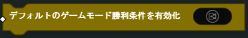

ゲームプレイ
出撃
すべてのプレイヤーの出撃を有効化
全プレイヤー向けに、出撃画面からの出現を有効化、または無効化します。
- パラメーター
ブール
再出撃時間を設定
ターゲット プレイヤー の再出撃にかかる時間を上書きします。
注釈
プレイヤーの再出撃時間は60秒を超えません
- パラメーター
プレイヤー
数値
プレイヤーの出撃を有効化

ターゲット プレイヤー へ出撃の有無を設定します。
- パラメーター
プレイヤー
ブール
全プレイヤーの出撃をキャンセル
戦場で生存している全プレイヤーを出撃画面に返します。
プレイヤーの出撃をキャンセル

戦場で生存中のターゲット プレイヤー を出撃画面に返します。
- パラメーター
プレイヤー
ゲームモード
デフォルトのゲームモードスコアリングを有効化
デフォルトゲームモードのスコアロジックを有効化、または無効化します。 デフォルトのスコアロジックは、基本のゲームモードスコアルール（例：チームデスマッチまたはフリー・フォー・オールでキルを決める）を参照します。 独自にカスタムしたスコアロジックを実装させたい場合には、これを無効化してください。
- パラメーター
ブール
デフォルトのゲームモード勝利条件を有効化
ゲームモードのデフォルト勝利条件ロジックを有効化、または無効化します。 制限時間に到達する、あるいはチーム、またはプレイヤーが目標スコアに到達すると、勝利条件がチェックされます。 独自の勝利条件を発動させたい場合には、これを無効化してください。
- パラメーター
ブール
ボイスオーバーメッセージングを有効化

ゲームモードのボイスメッセージを有効化、または無効化します。
- パラメーター
ブール
ゲームモードを終了
現在のゲームモードを終了し、与えられた プレイヤーまたはチームId を指定します。 チームIdが0に設定されている場合は、ゲームモードが引き分けで終了します。
- パラメーター
チームId or プレイヤー
全プレイヤーの出撃を強制

出撃画面にいる全プレイヤーの出撃を強制させます。
ゲームモードのタイムを停止

指定された ブール 入力に基づいて、ゲームモード・タイマーを一時停止したり、解除したりします。
- パラメーター
ブール
ゲームモードのタイムをリセット
ゲームモードの時間をリセットします。
ゲームモードスコアを設定

指定された プレイヤーまたはチームId のゲームモードのスコアを設定します。
- パラメーター
プレイヤー or チームId
数値
ゲームモードのタイムリミットを設定

ゲームモードの持続時間を（秒）設定します。
- パラメーター
数値
ゲームモードのターゲットスコアを設定

勝利を決めるのに使用するゲームモードの目標スコアを設定します。
- パラメーター
数値
全般
チームIDを設定
指定された チームIdを使用して、ターゲットプレイヤーのチームを設定します。 これによりプレイヤー は強制的に出撃画面に戻されます。
注釈
このブロックは「フリー・フォー・オール」ではサポートされておらず、現在AIでは機能しません。
- パラメーター
プレイヤー
チームId
兵士
キル
ターゲット プレイヤー をキルする（ダウン状態をスキップ）。
- パラメーター
プレイヤー
ターゲットをスポット

指定された持続時間（秒）内に、ターゲット プレイヤー をスポットします。
- パラメーター
プレイヤー
数値（時間）
ターゲットのスポットをキャンセル

ターゲット プレイヤー のスポットを解除します。
- パラメーター
プレイヤー